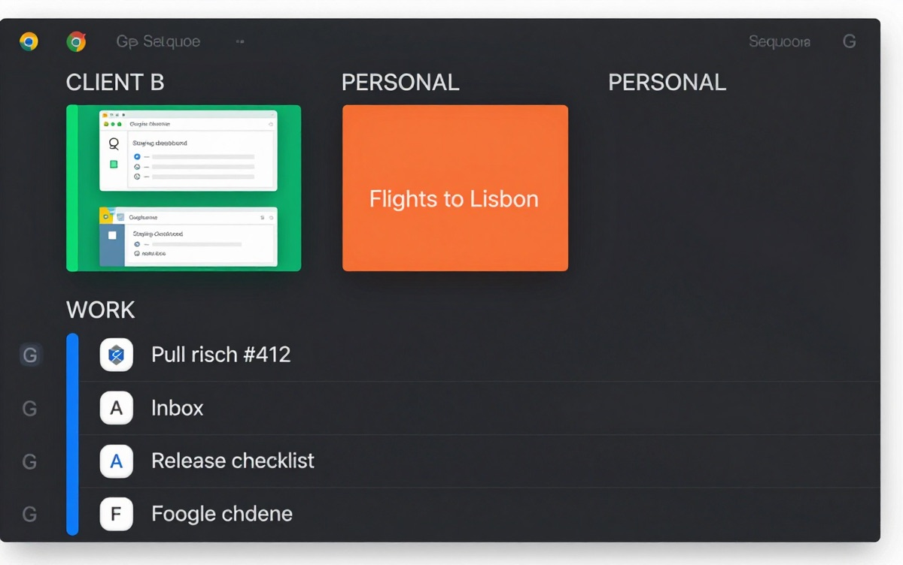
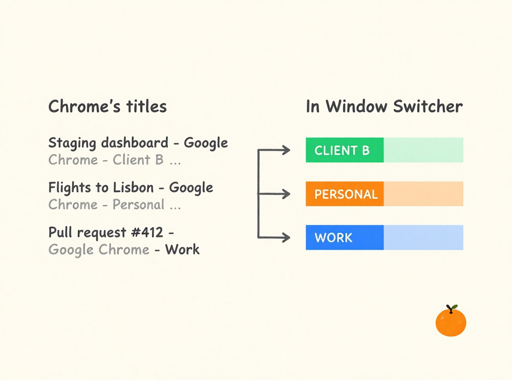
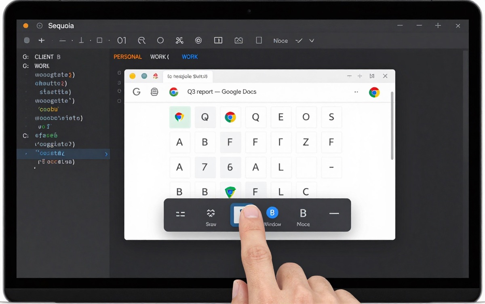

Features / Chrome by profile
Chrome by profileWork, personal and every client, sorted for you.
Google Chrome's windows are grouped under each profile's name, in the colour you gave that profile in Chrome. You can tell your client's dashboard from your own at a glance.
● On by default. Nothing to set up
One heading per profile, in its own colour.
Window Switcher reads the names and colours of your profiles from Chrome itself. Each profile gets a heading, and each of its windows gets a bar in that colour.
- Profiles in A to Z order. Windows keep their order within each one.
- Letters follow the list. G A is the first window under the first profile, and so on down.
- Nothing to configure. The names and colours are the ones you already chose in Chrome.

AI draft · replaceThe profile moves out of the title.
Chrome ends every window title with "Google Chrome" and the profile's name. Window Switcher drops both, because the heading already says which profile it is. What's left is the page's own title.
- More of the title fits. "Staging dashboard", not "Staging dashboard - Google Chrome - Client B".
- No more guessing between windows that show the same page in two profiles.
- Every window keeps its keys. Grouping changes only how they're listed.

AI draft · replaceBuilt for people with more than one login.
Consultants with a profile per client. Agencies juggling accounts. Anyone with a work and a personal Chrome. The window you want is two keys away, and you can see whose it is before you press them.

AI draft · replaceSettings that change it.
In Settings → General.
Good to know.
Do I need to set anything up?
No. If you use more than one Chrome profile, the grouping is there the first time you open the switcher.
Which browsers does it work with?
Google Chrome only. Other browsers' windows are listed by title as usual.
What does it read from Chrome?
The window titles it already shows, plus Chrome's list of profile names and colours on your Mac. Nothing leaves your Mac.
What happens if I turn it off?
Chrome's windows are listed in one group, and each title keeps the profile's name at the end so you can still tell them apart.
Press ⌥⇥. Then the next key you want.
Free for the Mac. No account, nothing running in the background, and every app has a key the moment it's installed.
Download Window Switcher for Mac